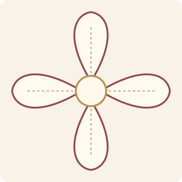
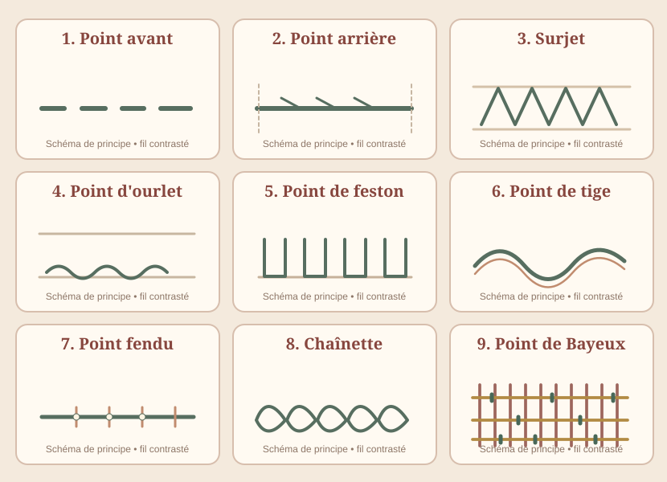

1
Point avant
Le geste : Pique et ressors tous les 3 à 4 mm en alternant point et intervalle. Pour bâtir, réalise des points plus longs de 7 à 8 mm.
Exercice : Fais deux lignes de 10 cm avec des points de longueurs différentes.
Essai :
Couper 4 fois ce gabarit : 2 pièces extérieures + 2 doublures.
Reporter le motif sur le devant avant d'assembler la bourse.

Fleur originale d'environ 6 cm de diamètre.
Mesure cette zone :
exactement 50 × 50 mm.
Si elle est plus petite ou plus grande, corrige l'impression.

Trace sur une chute de 20 × 25 cm neuf zones pour t'entraîner. Commence avec des fils contrastés. Le point de Bayeux est une technique de couchure en trois passages. Le motif floral proposé est une création pédagogique, pas la reproduction d'un objet de musée.
Feuille 3 / 5 · Assemblages
Le geste : Pique et ressors tous les 3 à 4 mm en alternant point et intervalle. Pour bâtir, réalise des points plus longs de 7 à 8 mm.
Exercice : Fais deux lignes de 10 cm avec des points de longueurs différentes.
Le geste : Sors en A ; pique 4 mm plus loin en B ; ressors en C, encore 4 mm après. Reviens piquer en B puis ressors plus loin que C.
Exercice : Assemble deux chutes sur 10 cm, tire doucement pour tester.
Le geste : Fais sortir l'aiguille à 3 mm du bord, passe le fil par-dessus la tranche, repique en avançant d'environ 4 mm.
Exercice : Protège 10 cm de bord sur une chute de lin.
Feuille 4 / 5 · Finitions et lignes
Le geste : Replie deux fois de 5 mm. Prends un ou deux fils de l'étoffe principale, reviens dans l'ourlet et avance de 4 à 6 mm.
Exercice : Compare les faces endroit et envers d'un ourlet de 10 cm.
Le geste : Pique à 4 à 5 mm du bord, ressorts au bord avec le fil sous la pointe et resserre doucement la boucle.
Exercice : Essaie 10 cm de bord avec des points serrés puis plus espacés.
Le geste : Pique 6 mm en avant puis ressors à mi-distance, en maintenant le fil du même côté à chaque fois.
Exercice : Brode une ligne, un cercle et une spirale.
Feuille 5 / 5 · Broderies historiques
Le geste : Forme un point de 4 à 5 mm, puis ressors au milieu de ce point en séparant ses deux brins.
Exercice : Trace trois petites nervures de feuille.
Le geste : Repique près du point de départ en laissant une boucle ; ressors 5 mm plus loin dans cette boucle. Fixe la dernière boucle.
Exercice : Brode une vague de 10 cm en variant la taille des maillons.
Le geste : Couvre une zone de longs fils parallèles ; ajoute des fils perpendiculaires ; fixe ces derniers avec de petits points décalés.
Exercice : Deux carrés de 4 × 4 cm, l'un ton sur ton, l'autre contrasté.